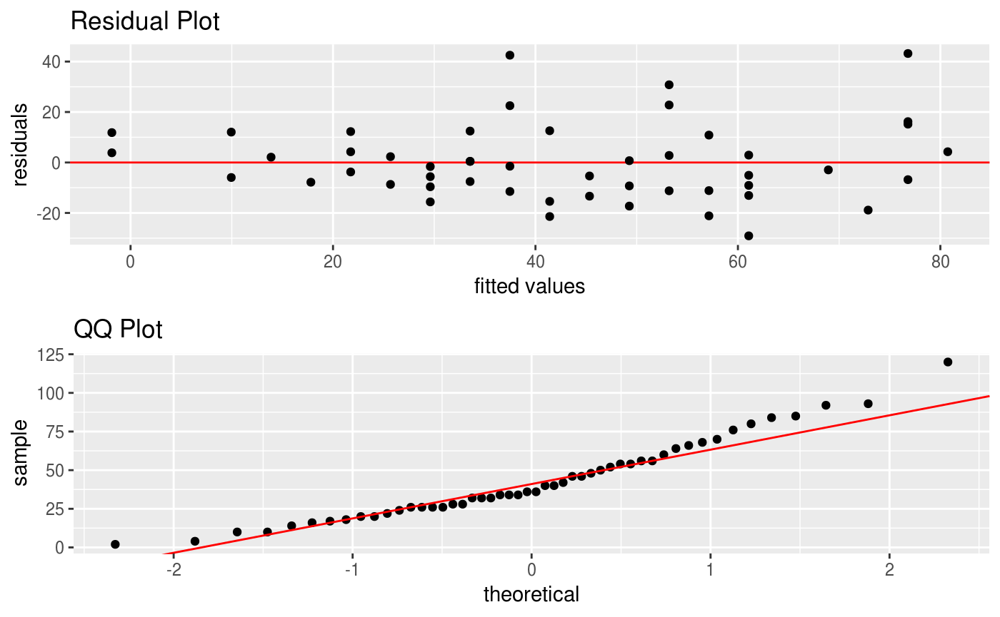
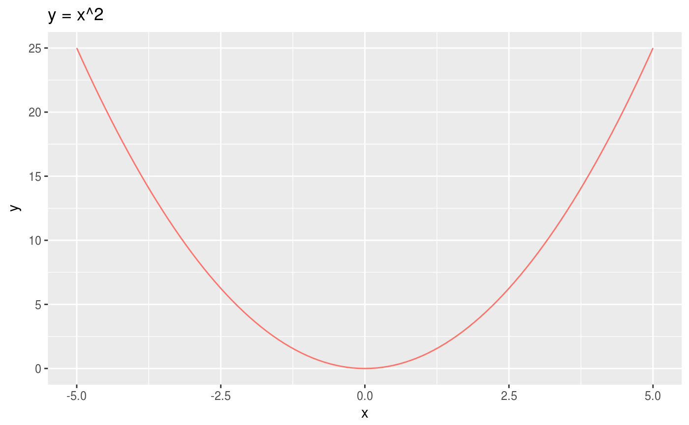
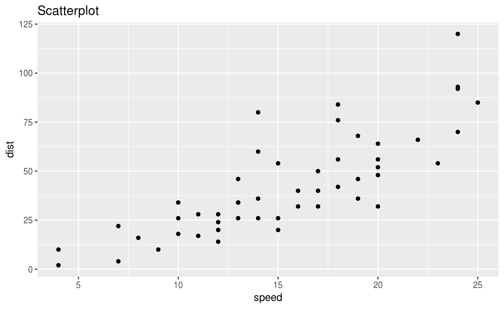

The easiest way to install is from the development version from Github:
If there are any issues/bugs, please let me know: github. You can also contact me via my website.
statr is a personal R package that I have created for organizational/convenience purposes. This project is purely experimental!!! A (possibly incomplete) list of functions contained in the package can be found below:
tidy() tidy’s R package code and updates documentationtimeit() prints the computation time of a functionscatter() creates a scatterplot using ggplotdiagnostic() creates diagnostic plots using ggplot (residual and QQ)dsearch() is a dichotomous search algorithm for minimizing a univariate functionbsearch() is a bi-section search algorithm for minimizing a univariate functiontimeit()
As a simple example, we will time the lm() function with the cars data set:
## user system elapsed
## 0.004 0.000 0.005diagnostic()
Similar to scatter, diagnostic creates diagnostic plots (residual and QQ) in ggplot:

dsearch()
dsearch is a dichotomous search algorithm that will minimize univariate strictly pseudoconvex functions. Let us consider the quadratic function centered at 0:
#quadratic
x = seq(-5, 5, 0.1)
y = x^2
data = data.frame(x, y)
ggplot(data) + geom_line(mapping = aes(x, y, color = "red"), show.legend = FALSE) + ggtitle("y = x^2")
The minimum of this function clearly occurs at \(x = 0\) but we will confirm that with the dsearch function.
## new interval is -4.761905e-08 4.761905e-08## [1] 0We can see that dsearch confirms the minimum occurs at the suggested point.
bsearch()
bsearch is a bisection search algorithm that works very similarly to dsearch. The difference being that bsearch will find the root of the function – that is, when the function is equal to zero. Therefore, if we want to again minimize the quadratic function, we need to input the derivative of the quadratic function to find its minimum (recall that local minima and maxima occur when the derivative/gradient is equal to zero).
#derivative of quadratic
x = seq(-5, 5, 0.1)
dy = 2*x
data = data.frame(x, dy)
ggplot(data) + geom_line(mapping = aes(x, dy, color = "red"), show.legend = FALSE) + ggtitle("dy = 2x")
## new interval is 0 0## [1] 0We can see that bsearch confirms the minimum occurs at \(x = 0\).